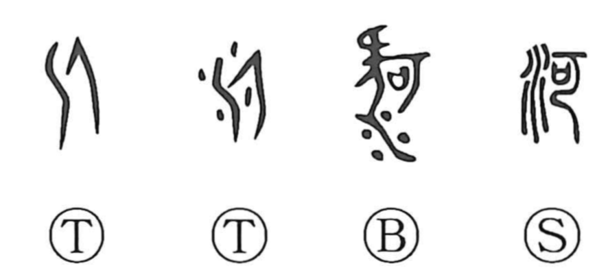

Explanation
河 is a phono-semantic character: the water radical signals “river,” while the right-hand phonetic is 可 (ka), which provides the sound value, as seen also in 呵 “to shout or scold loudly.” In early forms a 丁-like element appears on the right, originally depicting a snapped, bent tree branch, a shape that naturally calls to mind sharp bends. Shirakawa notes that this can be read as evoking the Yellow River’s striking course: in the Ordos it turns ninety degrees south, and after joining the Wei River it bends ninety degrees east. Early graphs show water on the left and that phonetic on the right, as if sketching those dramatic angles. In Chinese usage, 河 by itself came to denote the Yellow River, and more broadly rivers of the north, as opposed to 江 for southern rivers such as the Yangtze.